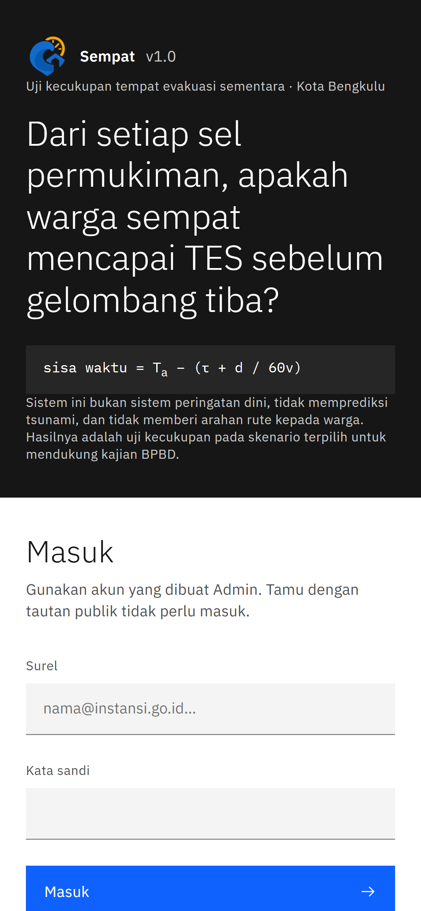
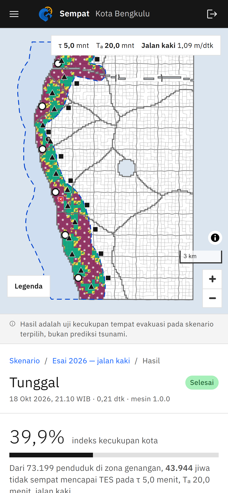
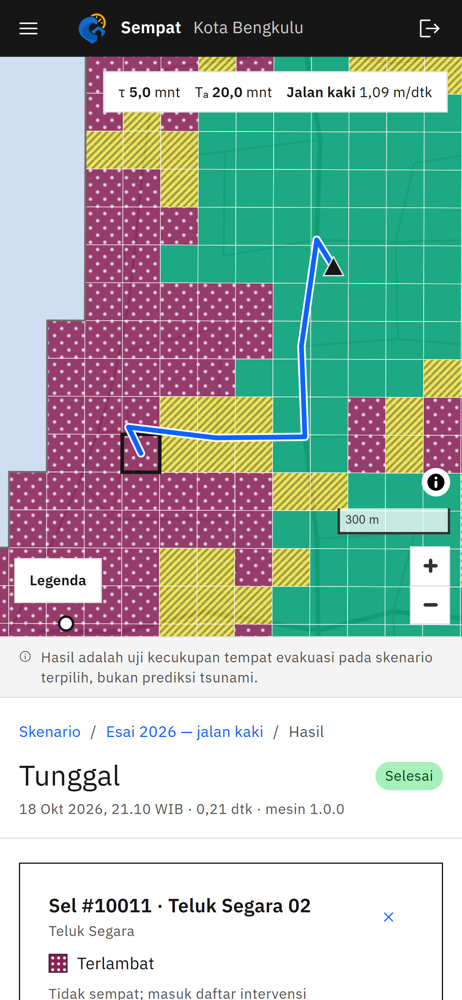
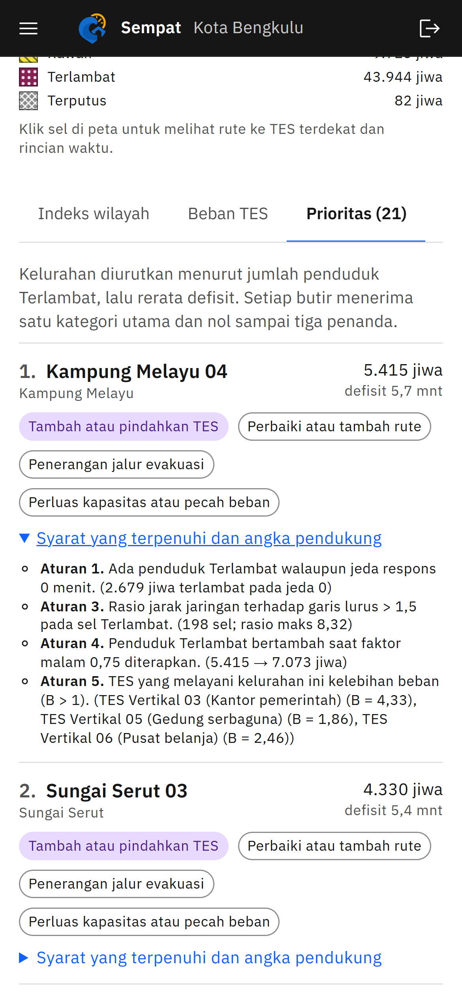
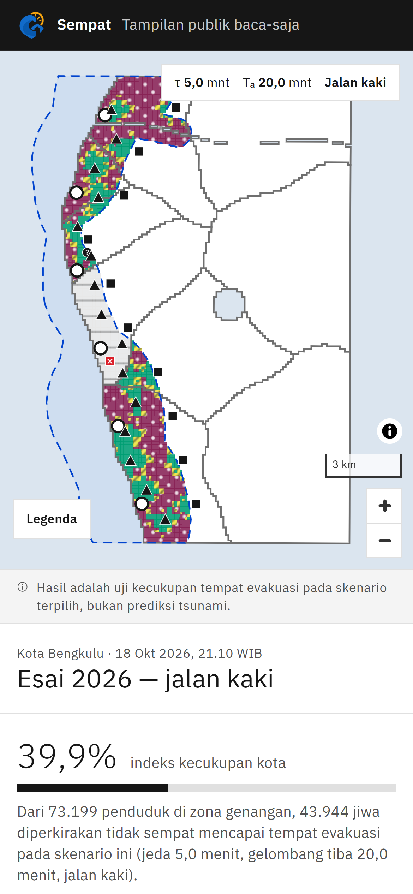

Tampilan aplikasi web pada telepon seluler · Kota Bengkulu

Admin, Analis, dan Peneliti masuk dengan akun; tamu cukup memakai tautan publik.

Setiap sel 100 m diberi kelas Cukup, Rawan, Terlambat, atau Terputus, lengkap dengan parameter skenario.

Ketuk sel untuk melihat jalur terpendek lewat jaringan jalan dan rincian m = Tₐ − (τ + t).

Kelurahan diurutkan menurut penduduk Terlambat, dengan rekomendasi dan aturan yang memicunya.

Untuk relawan dan warga: peta dan indeks tanpa data akun; sel di bawah 10 jiwa disembunyikan.